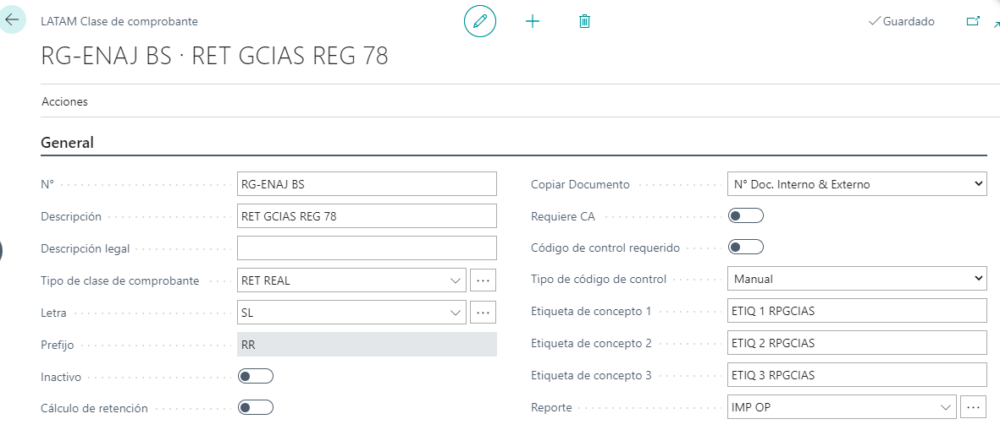
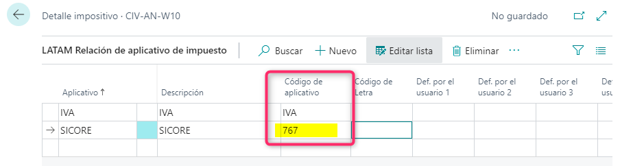
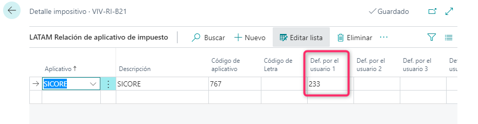
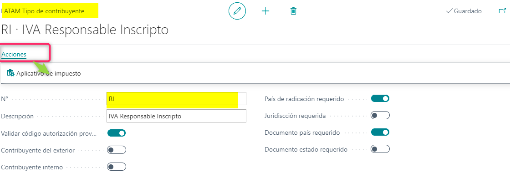
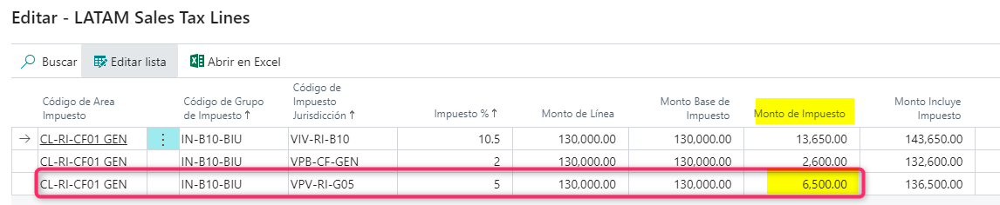
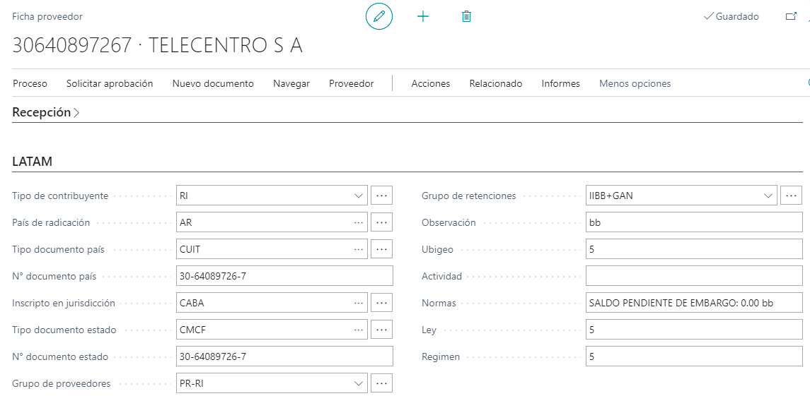
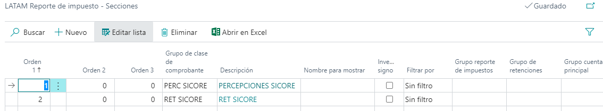
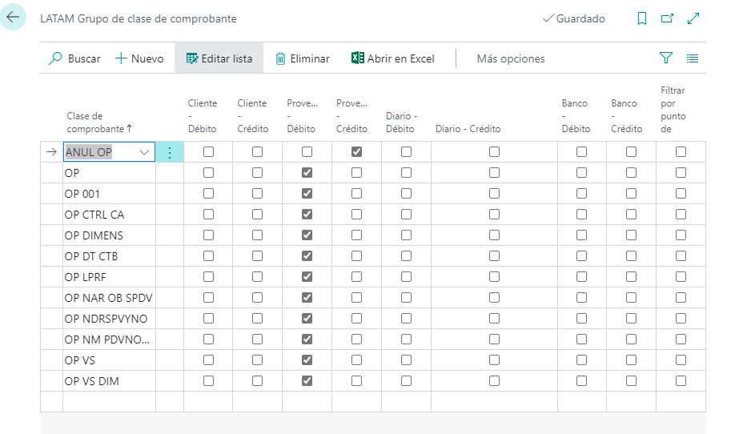
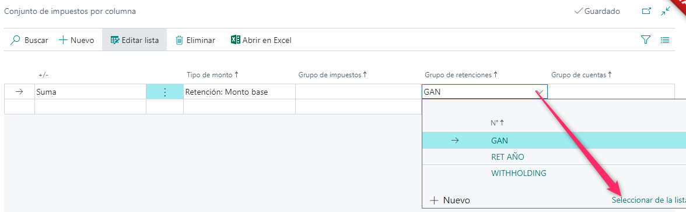
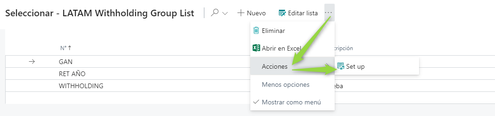

Aplicativo SICORE
Objetivo
El presente manual tiene por objetivo explicar las configuraciones necesarias para la emisión del aplicativo SICORE (Sistema de Control de Retenciones).
Dicho aplicativo busca informar los regímenes e importes inherentes a retenciones y percepciones realizadas en un período determinado.
Se podrá emitir el siguiente archivo:
- Transacciones sobre Retenciones Realizadas de Impuestos a las Ganancias e IVA y Percepciones Realizadas de IVA.
Archivo de Sujetos Retenidos y Percibidos
Los campos que integran el archivo son los siguientes:
-
Número de documento del Retenido/Percibido: es el número de documento país del cliente o proveedor que realizó o sufrió la percepción o retención respectivamente.
Este campo se toma del maestro Clientes o Proveedores, ubicado en dentro del Cliente o Proveedor seleccionado en la Solapa Latam
Clientes

Proveedores

-
Razón Social: es el nombre legal del cliente o proveedor que realizó o sufrió la percepción o retención respectivamente.

-
Domicilio Fiscal: es la calle de la dirección principal del cliente o proveedor que realizó o sufrió la percepción o retención respectivamente.
-
Localidad: es la ciudad de la dirección principal del cliente o proveedor que realizó o sufrió la percepción o retención respectivamente.
-
Provincia: es el Código de Aplicativo para el Estado de la dirección principal del cliente o proveedor que realizó o sufrió la percepción o retención respectivamente.
-
Estos campos se toman del maestro de Estados, ubicado en INFORMACIÓN DE LA EMPRESA → CONFIGURACIÓN DE LA APLICACIÓN → CONFIGURACIÓN DE CONTABILIDAD → ACCIONES → LATAM → APLICATIVOS DE IMPUESTOS
-
Código Postal: es el código postal de la dirección principal del cliente o proveedor que realizó o sufrió la percepción o retención respectivamente.
-
Tipo de documento del Retenido/Percibido: es el Código Aplicativo para el Tipo de Documento del cliente o proveedor que realizó o sufrió la percepción o retención respectivamente.
Estos campos se toman del maestro Tipos de documento, donde se selecciona una de las tipos de documento ya cargados ACCIONES → APLICATIVO DE IMPUESTOS


Archivo de Percepciones y Retenciones
Los campos que integran el archivo son los siguientes:
-
Código de Clase de Comprobante: es el Código Aplicativo relativo a la clase de comprobante para la que se calcula la Retención o Percepción.
Para las Retenciones, se tomará la clase de comprobante que represente el pago desde el Diario de Pagos, como por ejemplo Orden de Pago:
Se debe ingresar al formulario ubicado en LATAM → COMPROBANTE → CLASE DE COMPROBANTE → ACCIONES → APLICATIVO DE IMPUESTOS


Para las Percepciones, se tomará la clase de comprobante que represente la venta, como por ejemplo Factura, Nota de Crédito, Nota de Débito, etc.:


-
Fecha de emisión del comprobante (DD/MM/YYYY): es la fecha en que se registró el comprobante de retención o de percepción.
Para las Retenciones, el dato se tomará del campo Fecha de documento, de la línea de retenciones. Las transacciones se ingresarán mediante el formulario ubicado en
TESORERIA → DIARIOS DE PAGOS → SECCION DE DIARIO

Para las Percepciones, el dato se tomará del campo Fecha del comprobante original en el cual se ha calculado la percepción.

-
Número del comprobante: es el número de comprobante de la línea de tipo Proveedor o Cliente donde se calcularon las retenciones (Pagos) o percepciones (Ventas).
Para las Retenciones, el dato se tomará de los campos ‘Punto de venta + Número de Comprobante’ de la línea de la Orden de Pago.

Para las Percepciones, el dato se tomará de los campos ‘Punto de venta + Número de Comprobante’ del Comprobante de Ventas en el cual se ha calculado la percepción.

-
Importe del comprobante: es el monto de la línea de tipo Proveedor o tipo Cliente donde se calcularon las retenciones (Pagos) o percepciones (Ventas).
Para las Retenciones, el dato se tomará de la línea de Proveedor, el monto de la Orden de Pago.
Para las Percepciones, el dato se tomará del monto total del Comprobante de Ventas (Factura, Nota de débito y Nota de crédito).

-
Código de impuesto: es el Código Aplicativo para el Código de Retención o Código de Impuesto aplicable para la percepción o retención respectivamente.
Para las retenciones el dato se toma del formulario Aplicativos del Código de Retención que tiene asociada la clase de comprobante de la retención LATAM>>CLASE DE COMPROBANTES>> ACCIONES>> LATAM RELACIÓN DE APLICATIVO DE IMPUESTO


Para las percepciones el dato se toma del formulario Aplicativos del Código de Impuesto que tiene asociado el cliente. El campo se toma del JURISDICCIONES FISCALES

-
Código de régimen: es el código de Régimen para el Código de Retención o Código de Impuesto aplicable para la percepción o retención respectivamente.
Para las retenciones el dato se toma del formulario Aplicativos del Código de Retención que tiene asociado el proveedor. LATAM → CLASE DE COMPROBANTES → ACCIONES → LATAM DE APLICATIVO DE IMPUESTO
Para las percepciones el dato se toma del formulario Aplicativos del Código de Impuesto que tiene asociado el cliente. El campo se toma de JURISDICCIONES FISCALES → SELECCIONO EL CODIGO → LATAM → APLICATIVO DE IMPUESTOS



-
Código de operación: si se trata de una Retención, se informará el número ‘1’ en este campo. En cambio, si se trata de una Percepción, se informará el número ‘2’ en este campo.

-
Base de cálculo: en este campo, se informará la base sujeta a retención o percepción, según corresponda.
Para las Retenciones, en el Diario de Pagos, para la línea de Retención, el campo de donde se tomará la información será ‘Base Imponible’. En el reporte se configurará que esta información se muestre en la columna ‘Base de retención’.

Para las Percepciones, el campo de donde se tomará la información será Origen del monto desde la ventana Impuestos sobre las ventas, del comprobante de Ventas. En el reporte se configurará que esta información se muestre en la columna ‘Base de percepción’.

-
Fecha de Emisión de la retención (DD/MM/YYYY): es la fecha en que se registró el comprobante de retención o de percepción.
Para las Retenciones, el dato se tomará del campo Fecha de documento, de la línea de retenciones. Las transacciones se ingresarán mediante la siguiente ruta:
TESORERIA → DIARIOS DE PAGOS → SECCION DE DIARIO

Para las Percepciones, el dato se tomará del campo Fecha del comprobante original en el cual se ha calculado la percepción.

-
Código de Condición: es el Código Aplicativo para el Tipo de contribuyente del cliente o proveedor que realizó o sufrió la percepción o retención respectivamente.

-
Retención practicada a sujetos suspendidos: este campo siempre se informará en 0.
-
Importe de la Retención/Percepción: es el monto de las retenciones (Pagos) o percepciones (Ventas).
Para las Retenciones, en el Diario de Pagos, el campo de donde se tomará la información será de la línea de retenciones.

Para las Percepciones, el campo de donde se tomará la información será Monto de impuesto sobre las ventas calculado desde la ventana Impuestos sobre las ventas, del comprobante de Ventas.

Nota: es muy importante seleccionar el Grupo de Impuestos de Cliente que posea la Percepción a realizar ya que, de lo contrario, no se calculará en la transacción y será necesario invertirla y cargarla nuevamente, utilizando el Grupo de Impuestos que corresponda.
-
Porcentaje de exclusión: Se emite vacío.
-
Fecha de emisión del boletín: se emite 01/01/1900
-
Tipo de documento del retenido: es el Código Aplicativo para el Tipo de documento país del cliente o proveedor que realizó o sufrió la percepción o retención.
Para las retenciones el dato se toma del formulario Aplicativos del Tipo de Contribuyente que tiene asociado el proveedor. El campo se toma de LATAM → TIPO DE DOCUMENTO

-
Número de documento del retenido: es el número de identificación de País (CUIT) del proveedor o cliente. Este dato se tomará del maestro de Cliente o Proveedor, Solapa LATAM o de la transacción, si la clase de comprobante está configurada como detalla contribuyente:


-
Número certificado original: este campo se utilizará para informar datos de Beneficiarios del Exterior. Dicha funcionalidad no se encuentra abarcada por el alcance actual del desarrollo de emisión del archivo.
-
Denominación del ordenante: este campo se utilizará para informar datos de Beneficiarios del Exterior. Dicha funcionalidad no se encuentra abarcada por el alcance actual del desarrollo de emisión del archivo.
-
Acrecentamiento: este campo se utilizará para informar datos de Beneficiarios del Exterior. Dicha funcionalidad no se encuentra abarcada por el alcance actual del desarrollo de emisión del archivo.
-
CUIT del país del retenido: este campo se utilizará para informar datos de Beneficiarios del Exterior. Dicha funcionalidad no se encuentra abarcada por el alcance actual del desarrollo de emisión del archivo.
-
CUIT del ordenante: este campo se utilizará para informar datos de Beneficiarios del Exterior. Dicha funcionalidad no se encuentra abarcada por el alcance actual del desarrollo de emisión del archivo.
Configuración del Reporteador de Impuestos
A efectos de la generación del Archivo de Retenciones y Percepciones Realizadas de IVA y Ganancias, será necesaria la confección de un formato de reporte para esta salida en el formulario ubicado en CONFIGURACION → LATAM CONFIGURACION DE REPORTES → REPORTE DE IMPUESTOS


Los campos a completar son los siguientes:
-
N°: en este campo se deberá completar el código de identificación del reporte que se está parametrizando. Por ejemplo, SICORE.
-
Descripcion: en este campo se deberá completar el NOMBRE LEGAL del reporte. Es muy importante este campo, ya que será la denominación legal que se imprimirá en el reporte. Por ejemplo, SICORE.
Dentro de Acciones se podrán configurar las siguientes solapas

Solapa Secciones

Los campos a completar son los siguientes:
-
Orden 1, 2, 3: establecerá el orden en el que se mostrarán los comprobantes en el aplicativo. Para este caso, las Retenciones se mostrarán primero y, a continuación, las Percepciones.
-
Grupo de clase de comprobante en este campo se deberá seleccionar los conjuntos de comprobantes previamente configurados en el formulario ‘Conjunto de clase de comprobantes’. Dichos conjuntos deberán contener aquellos comprobantes que donde se calcularon las Retenciones realizadas de Impuesto a las Ganancias e IVA (OP) y Percepciones realizadas de IVA (FC/ND/NC).
PERCEPCIONES

RETENCIONES

-
Nombre: este campo ampliará con una descripción el código indicado en el campo ‘Id. de conjunto de comprobantes’. No es un campo editable.
-
Nombre para mostrar: este campo se utilizará para asignar el nombre del conjunto que deberá visualizarse en el reporte. En caso de estar en blanco, en el reporte saldrá vacío.
-
Invertir el signo: por cada conjunto de comprobantes se podrá determinar si en la visualización del reporte se debe invertir el signo. No será necesario marcar para este Archivo.
-
Filtrar por: este campo permite seleccionar una de las opciones de filtrado que se aplicarán sobre el conjunto de comprobantes seleccionado. La opción recomendada es:
-
Sin filtro: no tiene en cuenta ninguna de las columnas siguientes.
Solapa Columnas
Para el aplicativo SICORE Transacciones, se deberán configurar seis columnas en el reporte impositivo, de la siguiente manera:
-
Columna 1: Base Percepción
La primera columna deberá configurarse para mostrar el monto base de las percepciones a informar. Por ese motivo, en la grilla de Conjunto de impuestos por columna, se deberá configurar como ‘Impuesto: Monto base’, seleccionando el Id. De conjunto de impuestos que contenga a las percepciones a informar.


-
Columna 2: Importe Percepción
La segunda columna deberá configurarse para mostrar los montos de percepciones. Por ese motivo, en la grilla ‘Tipo de monto por columna’, se deberá configurar como ‘Impuesto: Monto’, seleccionando el Id. De conjunto de impuestos que contenga a las percepciones a informar, seleccionado en la Columna 1.


-
Columna 3: Base Retención
La tercera columna deberá configurarse para mostrar el monto base de las retenciones a informar. Por ese motivo, en la grilla de Conjunto de impuestos por columna, se deberá configurar como ‘Retención: Monto base’, sin Conjunto de Impuestos por tratarse de retenciones, pero sí con el conjunto de retenciones.





-
Columna 4: Importe Retención
La cuarta columna deberá configurarse para mostrar el importe de las retenciones a informar. Por ese motivo, en la grilla de Conjunto de impuestos por columna, se deberá configurar como ‘Retención: Monto’.


-
Columna 5: Total
Esta columna se adicionará a efectos de mostrar sólo las transacciones que posean los códigos de impuestos y retenciones configurados en las columnas precedentes. Para ello deberá crear una columna y configurarla como ‘Excluir Comprobante en Cero’. Adicionalmente en la grilla inferior deberá seleccionar ‘Impuesto: Monto Sujeto’ con el conjunto de comprobantes seleccionado en la Columna 1 y una línea como ‘Retención: Monto Sujeto’.


Solapa General

Los campos a completar son los siguientes:
-
Ordenar por: este campo permite indicar el orden a tomar en los documentos. Se recomienda la opción ‘Fecha + Comprobante + Número de documento’
-
Cantidad de decimales: este campo permite indicar la cantidad de decimales a mostrar en los campos de Tipo monto. Se recomienda colocar 2 decimales.
-
Separador de miles: este campo permite indicar el separador de miles a utilizar en el reporte a emitir, no del archivo. El archivo tomará como separador de miles el Punto (.)
-
Separador de decimales: este campo permite indicar el separador de decimales a utilizar en el reporte a emitir, no del archivo. El archivo tomará como separador de decimales la Coma (,).

Solapa Formato
Se recomienda asignar un formato de reporte a efectos de poder visualizar la información ingresada y controlar el contenido de lo informado en el archivo.


Definición de exportación de medios magnéticos
Una vez realizada la configuración general para cada archivo será necesario configurar específicamente la exportación de los archivos, en el formulario ubicado en FINANZAS → LATAM → MEDIO MAGNETICOS → DEFINICION DE MEDIOS MAGNETICOS


Se deberá configurar un registro por cada salida. Los campos a completar son los siguientes:
Solapa General
-
ID Medio magnético: es la identificación del código para exportación del archivo magnético. Se recomienda utilizar un código que el usuario que exportará el archivo, pueda distinguir.
-
Descripción: ingrese una descripción sobre el Tipo de Archivo a Exportar.
Configuración
-
Aplicativo de impuesto: Seleccionar el creado en ‘LATAM Aplicativo de impuesto’
-
Reporte de impuestos: Seleccionar el reporte de la lista desplegable
-
Reporte ID: Se debe seleccionar el ID correspondiente al aplicativo. Este ID lo proporciona Desarrollo previamente
Parámetros
-
Parámetros: en esta grilla se deberán agregar las distintas etiquetas que hacen al nombre del archivo a exportar y el tipo de extensión del archivo.
-
Nombre: SICORE
-
Extensión: .txt.
-
Nombre del archivo: en este campo se deberán concatenar los campos Nombre creados en la grilla Parámetros, precedidos por el símbolo \$ y sin espacios entre ellos.
-
Nombre de archivo traducido: este campo no es editable, solo tomará los campos Valor creados en la grilla Parámetros.
Exportación de medios magnéticos
Desde este formulario se emitirá el archivo y se determinará dónde debe guardarse, se puede acceder mediante el formulario ubicado en INFORMES → INFORMES FINANACIEROS →LATAM MEDIOS MAGNETICOS → EXPORTACIÓN DE MEDIOS MAGNÉTICOS.

Los campos a completar son los siguientes:
-
ID Medio magnético: aquí se deberá seleccionar el ID de Exportación, configurado en el formulario Definición de exportación de medios magnéticos.
-
Fecha desde: es la fecha inicial a partir de la cual se mostrará la información. Será la fecha de Registración de las Transacciones.
-
Fecha hasta: es la fecha final hasta la cual se mostrará la información. Será la fecha de Registración de las Transacciones.
-
Nombre del archivo: en este campo no editable se visualiza el nombre completo y extensión configurado en la Definición de exportación de archivos magnéticos.
Ejemplos de Archivos exportados
SICORE- Transacciones